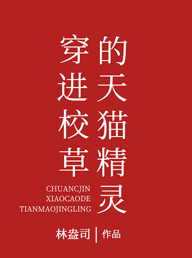

Si la vida se comparara con Dios tirando los dados, entonces Lu YunFei es un 6. Es guapo e inteligente, salvo por su abismal dominio del inglés. Eso fue hasta que conoció a Bian JinYuan: Bian JinYuan es alto y genial, es el mejor de su calificación en cada examen, y sus resultados en inglés definitivamente destruyen los de Lu YunFei dos veces. ¡Si es un 6, entonces este tipo es simplemente 666!
Dado que YunFei ya está aquí, ¿por qué sería necesario JinYuan? Es difícil que una montaña pueda albergar a dos tigres, a menos que uno sea macho y el otro hembra. Lu YunFei miró el género de la otra parte y silenciosamente tachó ese pensamiento.
Sin embargo, no mucho después de que comenzó a tratar a Bian JinYuan como un rival, descubrió que después de las 9 p.m., misteriosamente poseería al Pequeño Genio de Bian JinYuan. (Una mascota felina similar a Amazon Alexa o Google Home).
Después de poseer al Tmall Genie, Lu YunFei se dio cuenta de que su rival es en realidad un príncipe pobre. Lu YunFei, que poseía apariencia, altura y riqueza, miró sus cartas que casi rebosaban de dinero y decidió establecer relaciones de amistad. Por lo tanto, como Bian JinYuan carecía de dinero, Lu YunFei lo contrató para que fuera su tutor de inglés.
Bian JinYuan compró un pastel y no podía soportar comerlo para poder llevárselo a casa para su familia. Lu YunFei le compró un gran trozo de pastel al día siguiente.
Después de haber hecho buenas obras todos los días, Lu YunFei sintió que el pañuelo rojo invisible en su pecho se había vuelto más brillante.
Hasta que hubo una publicación candente en el foro de la escuela: 《Exponga a Lu YunFei: conseguir que el mejor estudiante sea su lacayo, ¿realmente cree que es todo eso para tener dinero? 》
El cartel original enumeraba varios casos: llevar bolsas, traer agua, pelar castañas; Al genio de la escuela se le daban órdenes como si fuera un sirviente. Todos estaban disfrutando de los chismes, cuando Bian JinYuan, que nunca antes había publicado en el foro, publicó por primera vez con su nombre real.
Bian JinYuan: No necesito el dinero, estoy dispuesto, ¿por qué te importa?
Todos estaban mudos de miedo.
A Lu YunFei le preocupaba si debería molestar menos a Bian JinYuan.
"Eso no es necesario, me gusta que me molestes".
"Olvídalo", rechazó Lu YunFei.
Bian JinYuan pensó por un momento: "Entonces déjame reformularlo: eso no es necesario, me gustas".
Lu YunFei: ???!!!
Lu YunFei nunca esperó que la montaña fuera ancha y albergara muchos tipos de tigres. ¡Juntos, dos tigres machos no solo pueden correr rápido, sino también enamorarse!